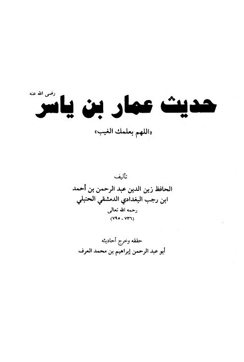

Authors
إبراهيم بن محمد العرف
Author
Resources

شرح حديث عمار بن ياسر رضي الله عنه "اللهم بعلمك الغيب"
شرح حديث عمار بن ياسر رضي الله عنه "اللهم بعلمك الغيب"
عبد الرحمن البغدادي بن رجب الحنبلي
غاية النفع في شرح حديث تمثيل المؤمن بخامة الزرع
غاية النفع في شرح حديث تمثيل المؤمن بخامة الزرع
عبد الرحمن البغدادي بن رجب الحنبلي